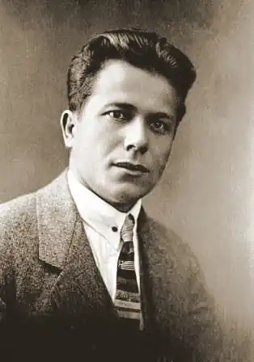

Григорій Косинка (1899-1934)
Григорій Михайлович Косинка (справжнє прізвище — Стрілець) народився 29 (17) листопада 1899 року в селі Щербаківка Обухівського району Київської області. Батьки — малоземельні селяни — намагалися поліпшити своє злиденне життя десь за Уралом, біля Байкалу, але й там добра не знайшли. Повернулися назад до села і перебивалися батьківським підробітком на цукровому заводі в сусідньому селі Григорівка. Рано довелося йти на заробітки й малому Григорію — працювати в панських економіях. З чотирьох років навчився грамоти від діда, закінчив двокласну школу в селі Красний кут. Особливо заохочував малого Григорія до навчання брат матері, згодом — відомий прозаїк Калістрат Анищенко. Коли Григорію минуло 14 років, він вирушив до Києва, сподіваючись кращими заробітками якось підтримати матір, що після смерті батька залишилася з п'ятьма малими дітьми на руках.
У Києві Косинка працює чистильником чобіт, канцеляристом і відвідує вечірні гімназіальні курси. Творчий дебют прозаїка відбувся 1919 року, коли в одному з літніх чисел київської газети "Боротьба" з'явилося його перше оповідання — "На буряки". Публікації 1920-го року чисельніші: в київському альманасі "Гроно" з'являються оповідання "Під брамою собору", "Мент", "За земельку", а 1922-го — перша книжка новел та оповідань "На золотих богів". Про неї Сергій Єфремов відгукнувся так: "побут б'є з них, іскриться своїми типовими рисами й дає справжній образ сьогочасного, може, не глибокий, трохи одноманітний, але свіжий, живий, яскравий. Велика наших часів боротьба знайшла в Косинці вдумливого спостережника, — саме оця боротьба, а не дрібний щоденний побут, і через те деяка плівка героїчності, молодого романтизму лежить на цих коротеньких, але обточених нарисах-малюнках. Боротьба ця в свідомості Косинки не приходить одразу, раптом, — автор подає свої спостереження в перспективі, немов підготовляє заздалегідь читача". Ця збірка — коротка, прагматично об'єктивна історія страдницького народу, який втягнуто в вир революції та громадянської війни, що стає жертвою завойовницьких погромів, розперезаних хижацьких інтересів". Григорій Михайлович, як художник "від Бога", виступає водночас "за всіх" і "проти всіх", йому болять і рани бідності найбільш окраденого селянина ("На буряки"), і кров переконаного партійця ("Десять", "Темна ніч"), і безпросвітність декласованих спекулянтів та "вічних" міщан ("Місячний сміх"). Обраний Григорієм об'єктивно-драматичний загальнолюдський погляд на відтворювану дійсність не обіцяв йому, звичайно, спокійного життя в літературі, яку новонароджена офіційна критика (за допомогою цензури) дедалі активніше штовхала на шлях ортодоксальної одновимірності. Зовсім не випадково Євген Григорук лякав письменника, що коли той буде пропонувати більшовицькій пресі новели такого плану як "На золотих богів", то "рукопис піде до ЧК". На початку 1920-х молодий письменник навчається у Вищому інституті народної освіти — таку назву мав тоді Київський університет. Його ім'я стає відомим, особливо полюбляють слухати оповідання письменника в авторському виконанні: дзвінко, чітко карбуючи слова, письменник емоційно збагачує своєю дикцією діалоги. Через матеріальні нестатки Косинка не зміг закінчити повний курс навчання, але студентські роки (1921-1923) важили для нього дуже багато: він здобув певні історико-філологічні знання, чітко визначився у своїх світоглядних орієнтаціях. Другу книгу письменника — "Новели дезертира" — 1924 року вже відмовилися друкувати. Це стало предметом занепокоєння автора та літературної громадськості Харкова. Микола Хвильовий у листі до Миколи Зерова писав про цей факт, як про кричуще порушення літературної етики, а Григорію Михайловичу Косинці не залишалось нічого іншого, як працювати над новими творами. До наступної книги новел — "В житах" (1926) — увійшли кілька творів з першої збірки, однак більшість з них була написана протягом 1923-1925 років. В новій книзі Косинка постає перед читачем вже сформованим майстром реалістичного стилю. Об'єктивність художнього письма Косинки і гострота відтворюваних ним життєвих конфліктів викликали здивування серед критиків, а відверті вульгаризатори з-поміж них навіть публічно звинуватили письменника в поетизації ворожих радянській дійсності сил, в прихильності до куркульства, бандитизму і т.п. Володимир Коряк писав, що з новел Косинки не ясно, з ким він і проти кого. Я.Савченко вважав, що з усіх сучасних йому письменників Косинка є "найкривавіший", а Степан Щупак та Олександр Полторацький кваліфікували Григорія Косинку як куркульського агента в радянській літературі. Натомість високу оцінку творам письменника дали Мирослав Ірчан, Максим Рильський, Сергій Єфремов та ін. М.Рильський наголошував, що новели Косинки "з часом у певну гармонію злившись, дадуть епопею революції". Цензура раз-у-раз затримує його твори, а в пресі чимдалі більше лунають погрози. Не маючи змоги жити з літератури, Косинка заробляє на життя у сценарному відділі Київської кінофабрики. На початку 30-х років випускає збірку "Серце", яку в останній момент затримав Головліт. "Цькування, мислю я, повинно мати якісь межі, а виходить, що ні, що я помиляюсь…Все-таки я держуся. Не втрачаю ґрунту під ногами, хоч його давно вже можна було б згубити, бувши на моєму місці", — пише Косинка 16 квітня 1932 року. 1934 року в харківському будинку письменника була проголошена "настановча" доповідь Івана Кулика, який говорив про завдання письменників у зв'язку з перемогою Сталіна. В дискусії виступив і Косинка. Замість того, щоб обмежитися трафаретними словами вимушених заяв, як це робили інші, він вибухнув зливою скарг, нарікань, протестів. З різкою і запальною люттю він говорив, що в умовах "соціального замовлення", коли людину взяли за горлянку, вона не може творити. То була не промова, то був крик відчаю в самотній порожнечі пітьми. Зала завмерла від страху; кінець промови комуністи вкрили свистом, вигуками обурення, погрозами, а гальорка аплодувала. 4 листопада 1934 року письменника було заарештовано. З в'язниці він писав до дружини: "Пробач, що так багато горя приніс тобі за короткий вік. Прости, дорога дружино, а простивши — прощай. Не тужи, кажу: сльозами горя не залити. Побажаю тобі здоров'я. Побачення не проси, не треба! Передачу, коли буде можливість, передавай, але не часто. Оце, здається, все. Я дужий, здоровий!" 15 грудня 1934 року, "виїзна сесія Військової колегії засудила Григорія Косинку-Стрільця до розстрілу". Косинка гордо зустрів вирок у якому говорилося, що "більшість обвинувачених (письменника засудили разом з 28 іншими представниками української інтелігенції) прибули в СРСР через Польщу, а частина через Румунію, маючи завдання по вчиненню на території УРСР ряду терористичних актів. При затриманні у більшості обвинувачених забрані револьвери і ручні ґранати". Зрозуміло, що судова аргументація була повною нісенітницею. Ніхто з розстріляних за цим вироком — ні Григорій Косинка, ні Дмитро Фальківський, ні Олекса Влизько або Роман Шевченко, за винятком Крушельницьких (батька й синів) ніколи в житті не були ані в Польщі, ані в Румунії. Що ж до Крушельницьких, то вони стали жертвою своєї довірливості. Вони були комуністами, й прибули в Україну за запрошенням совєтського уряду. Твори: Новели (К., 1962); Серце (К., 1967); Твори (К., 1972); Гармонія (К., 1988); Заквітчаний сон (К., 1989). Література: Наєнко М. Григорія Косинка (К., 1989).